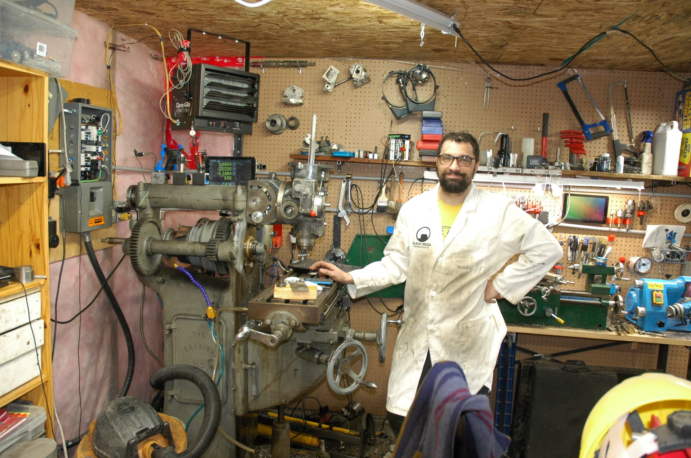

Chris Chatelain
Winnipeg, MB, Canada·chris.chatelain@digiex.ca
I can fix or build almost anything. As a kid growing up in rural Alberta, I was exposed to repair of all kinds from an early age. Before I could drive, I was helping an Aircraft Maintenance Engineer at the Nanton Air Museum re-skin the right inboard wing section, holding the bucking bar where my small hands could reach. By 14 I was helping repair and drive tractors around the farm, and helping a welder repair agriculture equipment of all sizes.
My dad was a machinist, starting his career at Standard Aero in Winnipeg. He taught me how to maintain and repair everything. From changing the starter in the truck, to machining a gear to replace a broken one in the camper, I was continually hands-on at his elbow.
That love of machinery and building things continued throughout my life. I build and fix things for the joy of figuring out how something works. I've gained experience with machining, welding, metal casting, electronics, amateur radio and amplifier construction, and programming safety critical microcontrollers.
I'm a troubleshooter and problem solver by habit. During my career as a software engineer, I was known as the person that could figure out what was wrong with systems people didn't know existed. This problem solving drive has obvious advantages to my hobbies, and now as I navigate starting a career in aviation maintenance.
